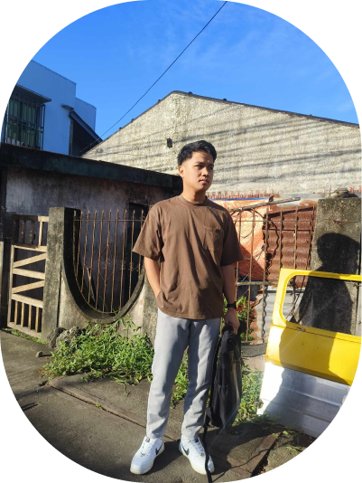

Online Portfolio
Home
About
Portfolio
Contacts
Online Portfolio
Home
About
Portfolio
Contacts
About me
About me

Mark Lester L. Miculob
BSIT 3B
I am Mark Lester L. Miculob, 26 years of age living at Lucena City. I was
born in Zamboanga Del Sur Pagadian City and left when I was 16 years old
with my family. I want to express my journey how I able to surpass all the
challenges of my life. Studying college for about 7 years and now I'm
still working on to get my degree. Those years taught me how to not giving
up and pursue my dreams that's why being a far from my parents and a
working student here at Lucena I can manage to continue and reach my dreams.
As a working student, my skills and personality had develop. For being a man
who's responsible and passionate, I know that being crew in Mcdo and
studying IT is quite a far but I believe it is about taking care of things
and fix them. I am grateful to our City for having a school that have
scholarship and that is Dalubhasaan ng Lucena I was able to study in free
and accept working student. Thankful for those people who have helped me and
push me, they always remind that education is important in people lives. Now
I'm conquering it and make my parents and love ones proud.